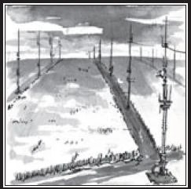

Agri-world
| Agri-world | |
|---|---|
| Class of Imperial world | |
 Harvest towers on an agri-world, from an early Administratum survey plate Artwork © Games Workshop | |
| Administratum class | Agri-world[a] |
| Typical tithe | Exactis or Decuma grades, assessed as a share of the harvest |
| Population | Usually under 100 million |
| Ruler | A planetary governor, or directly the Administratum |
| Supplies | Hive worlds, forge worlds, the Astra Militarum, the Imperial Navy |
| Examples | Iax, Quintarn, Masali, Tarentus, Gereon, Prandium (destroyed 745.M41) |
An agri-world (also agri world or agricultural world) is a planet of the Imperium of Mankind given over almost entirely to the production of food. Hive worlds and forge worlds are wholly incapable of feeding the billions who live and labour on them, and the armies of the Astra Militarum and the crews of the Imperial Navy consume food on a vast scale. To feed them, many planets have been remade into immense farms. Their continents are covered with fields, grazing lands and orchards, their oceans with fisheries and plankton farms, and their harvests are shipped in bulk to the worlds that depend on them.[1][2]
Agri-worlds are sparsely populated by Imperial standards. Most hold fewer than a hundred million people and only a handful of large cities. They are as vital to the Imperium as its hive cities, because a hive world cannot raise enough food to keep its population from starving, and even a slight crop failure or livestock plague can doom other worlds to famine or collapse an Imperial war front. Their labour is hard and remorseless, their tithes are paid in produce more often than in manpower, and some are ruled directly by the Administratum rather than by a local government, so that their harvests may be grown and gathered with the greatest efficiency.[3][4]
Though all agri-worlds serve one end, no two are alike. Some are temperate continents of grain and herd, others ocean worlds, fungus worlds, insect-farm worlds or gas giants whose upper air supports flocks of edible creatures. In time most become known for a particular export, as Kalto is for padonus rice and Cel for its mhoxen. Some of the most famous worlds of the Imperium are agri-worlds, among them Iax, once the Garden of Ultramar, and Hagia, the world of Saint Sabbat. Because the hives depend on them, agri-worlds are marked as targets in war, and the loss of one is felt across a sector.[1][5]
Characteristics
[edit]Classification
[edit]The Administratum assigns a world to this class according to its climate, its native livestock and other natural advantages. Many agri-worlds are fertile and temperate, with whole continents under one crop or herd. On others the artificial aspects dominate: sheltered hydroponic lakes, floating fields suspended in hollowed planetoids, or algae vats buried in irradiated mountains. A few planets are used only to provide clean water to nearby hive worlds. In every case the population is devoted to a single cause, the feeding of the Imperium.[2][1]
Crops and herds
[edit]Many agri-worlds rely on staples, which are simple to grow, store and process into the many forms in which food is consumed across the galaxy. Others concentrate on rare items and delicacies that only their own soil can yield, bound for the tables of the powerful. Fields vary in size and shape, from acreages laid out to the proportions of ancient decrees to patterns that venerate revered Imperial saints or follow the whims of the local ruler. Not all fields lie on land, since some are plankton farms that reap the oceans and others are caverns of underground fungi. Other agri-worlds specialise in livestock, from the ubiquitous Grox to native beasts that cannot thrive anywhere else, including sea-beasts larger than starships and sky-darkening clouds of protein-rich insects. Some import fodder or grow algae and vat-grown flesh to feed their herds until the beasts are harvested.[1][3]

Labour
[edit]Agriculture is mechanised where the Adeptus Mechanicus has a presence. Labourers with bionic scythe-limbs work beside monotask harvest servitors, while combat servitors with heavy stubbers patrol the fields to discourage marauding creatures. Elsewhere the work is done by hand. Some workforces are anchored to a single field and develop such devotion to their crop that new religious sects spring up like the plants. Others follow the seasons across the surface, descending on fields ripe for harvest and stripping the landscape of every edible stalk before marching on to the next. Few agri-worlders share in the bounty of their fields, and many live on discarded grain or meat unfit for processing.[1][4]
Government and tithe
[edit]Most agri-worlds have a planetary governor in the usual way, but a good number are ruled directly by adepts of the Administratum. Their tithe is paid mainly in edible produce rather than manpower, given their low populations and the worth of their exports. The Astra Militarum does draw recruits from agri-worlds, above all in times of invasion for neighbouring planets, and their planetary defence forces are expected to protect the harvest from raiders. A recruit from the fields may find a calling elsewhere. The worker who handles an auto-scythe or a harvest crawler may be noticed by the Cult Mechanicus, the one who spends years intoning prayers for a good harvest may be called by the Ecclesiarchy, and the one who keeps endless tallies of harvest and seed may be suited to the Administratum.[1][4]
The curse of mutation also touches agri-worlds, though it is less often confronted. Their lower population densities let the afflicted hide their deformities and slip from watchful eyes, and an Inquisitor of the Ordo Hereticus may find a farming world a good place to hunt.[1]
Strategic importance
[edit]Because the population centres of the Imperium depend on them, agri-worlds are common targets. Raiders seize their harvests, and an invading enemy destroys them to starve the hive worlds they feed. The Tyranids consume them first, since a rich world of living matter is what a hive fleet seeks, and the Imperial Navy and the Astra Militarum plan each campaign around the output of the farming worlds near the front. The loss of an agri-world can starve a sector, and the Imperium defends them accordingly.[3][6]
The worlds of Ultramar show how an agri-world fits into a larger plan. The Realm of Ultramar is divided by function, and its farming worlds, among them Quintarn, Masali and Tarentus, feed the realm and the Ultramarines. The garden world of Prandium, the Jewel of Ultramar, was devoured by Hive Fleet Behemoth in 745.M41.[7][8]
Notable agri-worlds
[edit]Imperial registries list some sixty agri-worlds in the sources consulted. The table gives some of the best recorded; where the records give no figure the cell is left blank.
| World | Region | Notes |
|---|---|---|
| Iax | Ultramar, Segmentum Ultima | The Garden of Ultramar; made a hospital world and then scoured by a virus bomb (012.M42) |
| Quintarn | Ultramar | Agri-world of the realm |
| Masali | Ultramar | Agri-world of the realm |
| Tarentus | Ultramar | Agri-world of the realm; birthplace of Titus |
| Prandium | Ultramar | Garden world, the Jewel of Ultramar; consumed by Behemoth (745.M41) |
| Calth | Ultramar, Veridia System | Agri-world of the realm; site of the Battle of Calth (007.M31) |
| Gereon | Sabbat Worlds, Khan Group | Occupied by the forces of Chaos in the Sabbat Worlds Crusade |
| Hagia | Sabbat Worlds | Home of Saint Sabbat |
| Kalto | Askellon Sector, Segmentum Obscurus | Famed for padonus rice |
| Rynn's World | Loki Sector, Rynnstar System | Homeworld of the Crimson Fists |
| Hilarion | Calixis Sector, Hazeroth Abyss | Population recorded at about 750 million |
| Flint | Scarus Sector, Angelus Sub-sector | Population recorded at 28 million |
History
[edit]Foundation and the Age of Strife
[edit]Many agri-worlds were terraformed in the Dark Age of Technology to feed the populous worlds of that era. When interstellar travel failed in the Age of Strife some starved for want of machinery, others were overrun, and many fell back on subsistence farming under local lords.[3][5]
Great Crusade
[edit]The Great Crusade (c. 798.M30–005.M31) brought the lost colonies back into compliance, and the Administratum set the tithes of the recovered worlds, assigning many to agriculture. One of these, Calth in the realm of Ultramar, was an agri-world of the Ultramarines at the time of the Horus Heresy, and the surprise attack of the Word Bearers there in 007.M31 left its surface a radiated waste.[7][9]
The Long War and the Era Indomitus
[edit]In the 41st millennium agri-worlds were drawn into every great war. The Sabbat Worlds Crusade carried the war to farming worlds such as Gereon and Hagia, and the forces of Chaos took many of their fields. In 999.M41 the opening of the Great Rift split the Imperium and broke supply routes across the galaxy, and hive worlds that lost the farming worlds that fed them began to starve.[5][10]
The Plague Wars of the early Era Indomitus showed the hazard to a farming world. Under assault by the servants of Nurgle, Ultramar was suffering casualties from disease and combat at a terrifying rate. After his return to Ultramar in 012.M42 the Lord Commander Roboute Guilliman redesignated Iax as a hospital world to receive the sick and wounded under strict quarantine. The offence to the Plague God was great, and the Great Unclean One Ku'Gath attacked Iax at the head of seven daemonic Plague Legions. When the Daemon Primarch Mortarion and his forces withdrew, they left a virus bomb that scoured all life from the once-verdant garden.[11]

Life on an agri-world
[edit]The people of agri-worlds live by the seasons of planting and harvest, in small communities scattered across the farmland under overseers who answer to the governor or the Administratum. The oldest settlement of Iax, First Landing, was a fortress city whose tall citadel withstood the barrages of many invaders, but there were no large cities, and the small towns were joined by fast hydroways. The strict quotas and relentless work breed strong people who bring their muscle to any problem. They seldom leave their home worlds, but those who do find many uses across the Imperium.[1][11]
Timeline
[edit]| Date | Event |
|---|---|
| Dark Age of Technology | Many agri-worlds are terraformed to feed the populous worlds of the era.[b] |
| Age of Strife | Isolated by the Warp, most agri-worlds fall back on subsistence farming under local lords.[c] |
| c. 798.M30–005.M31 | The Great Crusade restores the trade between agri-worlds and hives, and the Administratum assigns many recovered worlds to farming. |
| 007.M31 | The Word Bearers strike the agri-world of Calth in the Battle of Calth. |
| 745.M41 | Hive Fleet Behemoth consumes the garden world of Prandium. |
| M41 | The Sabbat Worlds Crusade reaches the agri-worlds Gereon and Hagia.[d] |
| 999.M41 | The Great Rift breaks supply lines and many hive worlds lose the farms that fed them. |
| 012.M42 | Ku'Gath invades Iax; the world is scoured of all life by a virus bomb. |
See also
[edit]
Notes
[edit]References
[edit]- ^ a b c d e f g h Codex: Genestealer Cults (8th edition, 2018). Games Workshop. pp. 32, 39.
- ^ a b Warhammer 40,000: Rogue Trader (1st edition, 1987). Games Workshop. p. 134.
- ^ a b c d Dark Heresy: Core Rulebook (roleplaying game). Games Workshop. p. 249.
- ^ a b c Only War: Core Rulebook (roleplaying game). Games Workshop. pp. 346-348.
- ^ a b c Abnett, Dan. Sabbat Worlds Crusade (background book). Games Workshop. Also Abnett, Dan. Traitor General (novel). Black Library.
- ^ Battlefleet Gothic: Rulebook. Games Workshop. pp. 134, 159.
- ^ a b Codex: Ultramarines (2nd edition). Games Workshop. p. 14.
- ^ "Prandium". Warhammer 40k Wiki (Fandom).
- ^ Bligh, Alan et al. The Horus Heresy Book Four: Conquest (Forge World series). Forge World. pp. 38, 42, 54-57.
- ^ Abnett, Dan. His Last Command (novel). Black Library.
- ^ a b "Iax". Warhammer 40k Wiki (Fandom).